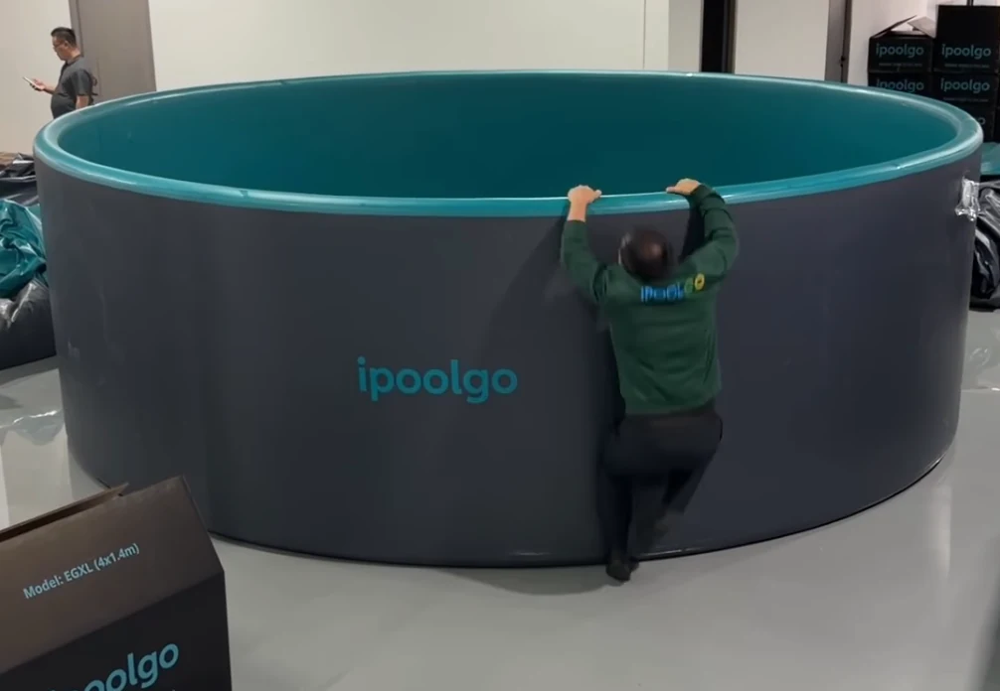
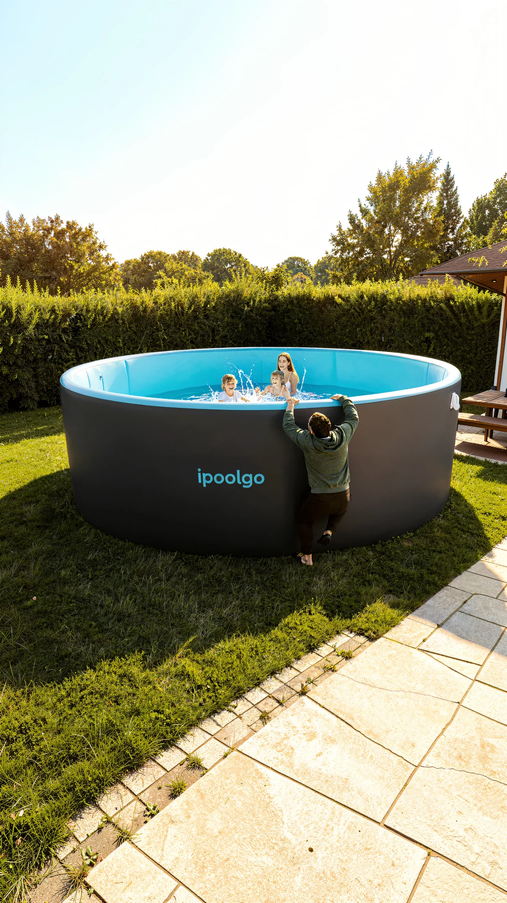
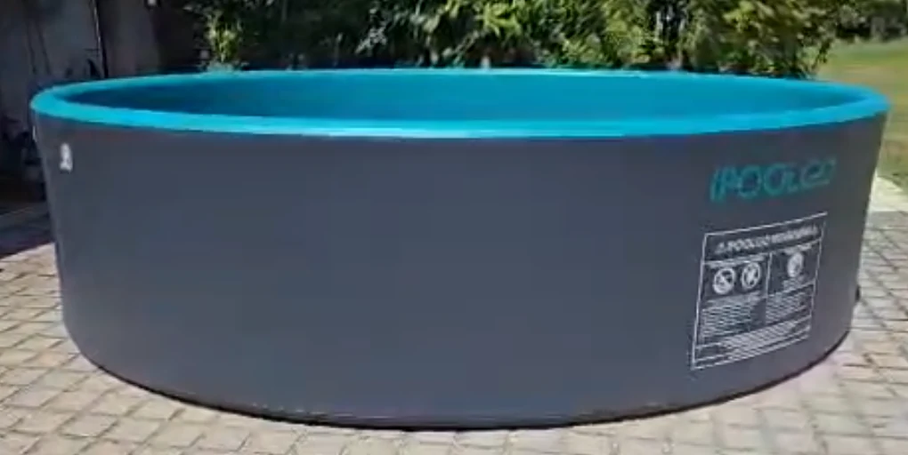
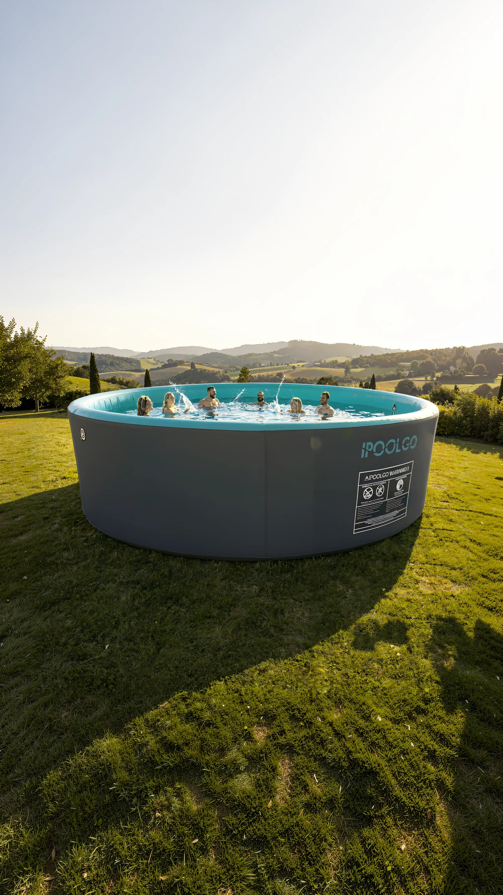

Garden pool scene


A reusable social content pipeline
Existing pool imagery becomes a stronger commercial still, expands into a vertical composition, and continues into short-form video through one repeatable production process.

Method
The pipeline preserves the recognizable pool product while rebuilding context, atmosphere, framing, and motion for a vertical social surface.
Production examples




Capabilities